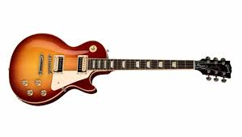
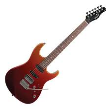
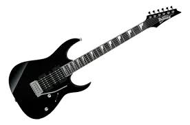

Bend
Esta técnica consiste em curvar a corda para alterar sua frequência e criar tons mais agudos.
Mesmo sendo mais comumente representadas em guitarras elétricas, essas técnicas também podem ser usadas em diversos outros instrumentos de corda
tente praticar regularmente mas não se forçe a praticar.
Esta técnica consiste em curvar a corda para alterar sua frequência e criar tons mais agudos.
Esta técnica envolve mover a corda de forma oscilante para criar um efeito de variação no tom.
Esta técnica consiste em silenciar as cordas com a palma da mão para criar um som mais seco ou para cortar uma nota repentinamente.
Esta técnica consiste em deslizar o dedo ao longo da corda para ligar uma nota a outra, criando um efeito suave e contínuo.



Preço médio: R$ 5.000,00
Preço médio: R$ 4.000,00
Preço médio: R$ 3.000,00
Mantenha as costas retas e os ombros relaxados.
Use movimentos pequenos para tocar com mais controle.
15 minutos por dia já fazem grande diferença.